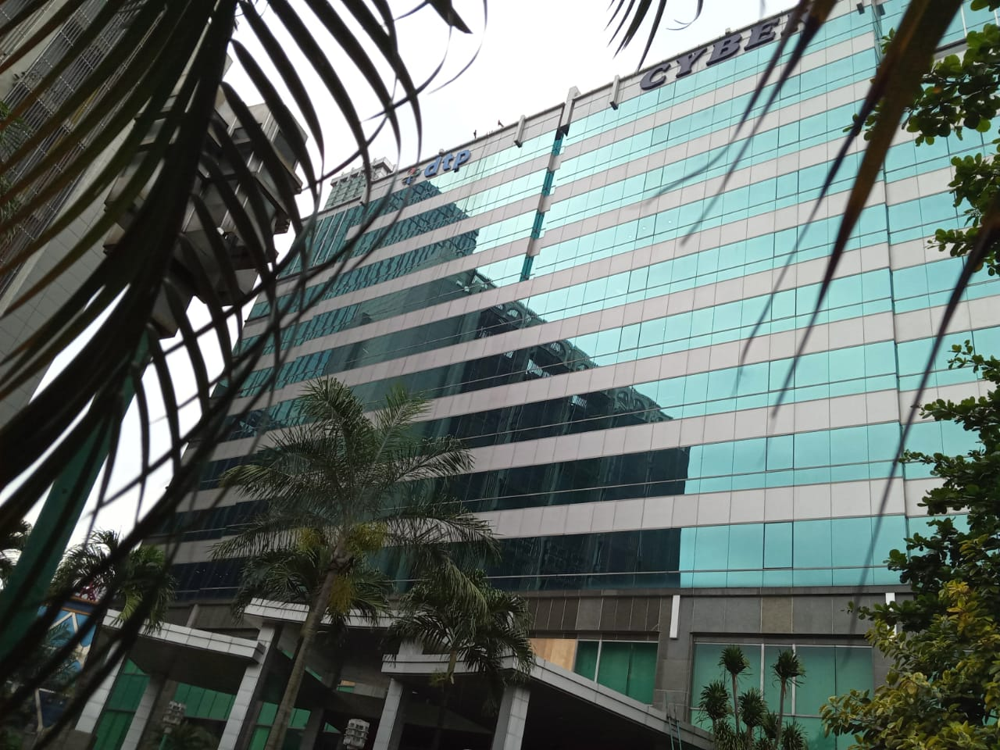

GEDUNG CYBER 1
Gedung Cyber adalah salah satu gedung perkantoran favorit di Jakarta yang terletak di kawasan Mampang Prapatan.
Gedung ini berdiri sejak tahun 1995,Tak sedikit perusahaan penyedia akses internet yang menggunakan gedung ini sebagai kantor dan pusat akses data atau data center.
Tidak hanya perusahaan besar saja yang menggunakan gedung ini, perusahaan menengah bahkan perusahan kecil pun turut menggunakannya.Perusahaan tersebut memilih Cyber sebagai kantor karena beberapa hal.
Salah satunya karena Cyber menyediakan lahan atau ruang kantor yang mendukung komponen dari sebuah perusahaan layanan internet.
Di sini terdapat ruang kantor untuk ditempati perangkat-perangkat internet dan data center yang memang membutuhkan luas ruangan serta daya listrik yang besar.